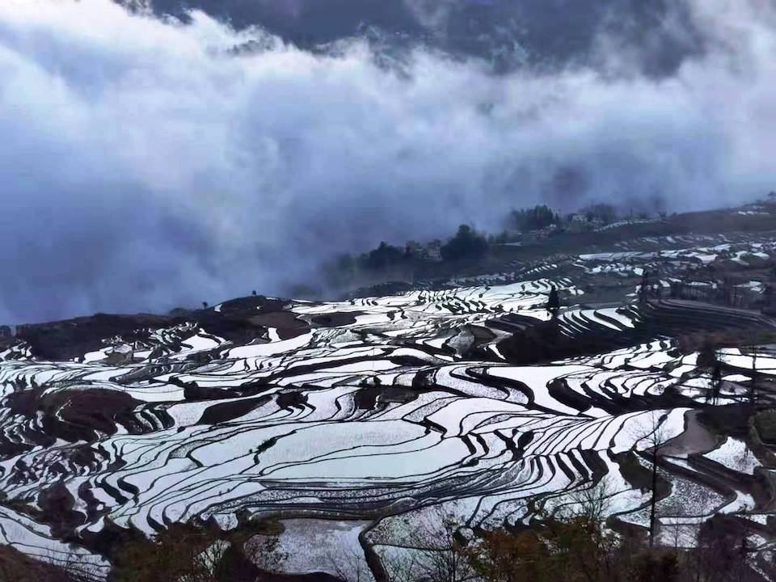

Education:Illinois Institute of Technology 08/2018-15/2023
Major:Computer Information System
Working Experience:Used to be a part time TA in my high school
My Hometown:Kunming, Yunnan, China
I come from Kunming, Yunnan, China. Kunming is the center city of the province Yunnan.
Yunnan:The province I lived
Yunnan is a landlocked province in the southwest of the People's Republic of China. The province spans approximately 394,000 square kilometres (152,000 sq mi) and has a population of 48.3 million (as of 2018). The capital of the province is Kunming. The province borders the Chinese provinces of Guizhou, Sichuan, autonomous regions of Guangxi, and Tibet as well as Southeast Asian countries: Vietnam, Laos, and Myanmar. Yunnan is China's fourth least developed province based on disposable income per capita in 2014.

Kunming:The city I lived
Kunming, also known as Yunnan-Fu, is the capital and largest city of Yunnan province, China. It is the political, economic, communications and cultural centre of the province as well as the seat of the provincial government. The headquarters of many of Yunnan's large businesses are in Kunming. It was important during World War II as a Chinese military center, American air base, and transport terminus for the Burma Road. In the middle of the Yunnan–Guizhou Plateau, Kunming is at an altitude of 1,900 metres (6,234 feet) above sea level and a latitude just north of the Tropic of Cancer. As of 2020 census, Kunming had a total population of 8,460,088. As of the 2018 estimation, its urban population was 4,089,100. And its built-up (or metro) area made of all urban districts but Jinning, not conurbated yet, was home to 3,779,900 inhabitants. It is at the northern edge of Dian Lake, surrounded by temples and lake-and-limestone hill landscapes.